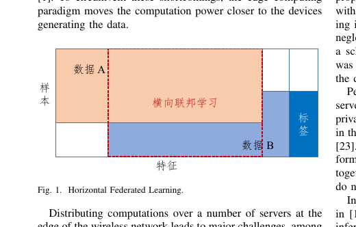
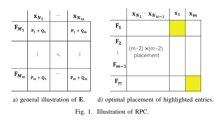

LaTex Blog一、常用论文术语1.常用简称2.概念（定理、引理等）Remark的用法二、图的绘制和插入1.图的绘制2.pdf格式的图片的插入3.eps格式的图片的插入3.1两个图并排3.2三个图并排3.3五个图并排3.4双栏图片竖排列4.图片按比例缩放5.pdf格式转为eps格式三、表的插入四、数学符号（公式）1.逗号不应放进公式里面2.空格表示方法3.矩阵类符号加粗、斜体：五、算法块1.（英文）算法块的插入2.（中文）算法块的插入六、参考文献系列1.正文中[引用]高亮显示+超链接2.引用文献在正文中的显示七、引用1.使用newcommand实现文中图片公式及\label引用2.正文引用带编号的公式八、正文1.定义、定理2.文字变红附录：出现的问题及解决方案1.参考文献中人名出现横线
链接：https://jiangwei99.github.io/LaTex_Blog/README.pdf
LaTex Blog
一、常用论文术语
1.常用简称
1i.e.2是“id est”的缩写，表示“that is; in other words; namely”，3用来进一步解释前面所说的观点，意思是“那就是说，换句话说”。4例句：There are three meals in the day (i.e., breakfast, lunch, and dinner).5we prove that the total number of required transmission time units is upper bounded by a value that depends on the average number of times the files are replicated (i.e., r).xxxxxxxxxx41e.g.2是“exempli gratia”的缩写，表示“for example; for instance; such as”，3用来引出若干例子来让前面说法更具体，更易理解，意思是“比如，例如”。4例句：I like sports, e.g., basketball and football.xxxxxxxxxx21iff2当且仅当x1etc.2是“et cetera”的缩写，意思是“等等”，相当于“and so on”。3放在句子末尾，用来列举事物；若要列举人，则需用“et al. ”或“and others”。4例句：I need to go to the store and buy some pie, milk, cheese, etc.5
6et al.7例句：8Yu et al. [2] provide novel coded9matrix multiplication called polynomial code structure that is10superior to those in the ABFT literature in terms of recovery11threshold, minimum number of successful (non-delayed, non-12faulty) processing nodes required to complete the computation13superior to classical works in the ABFT literature.xxxxxxxxxx21a.k.a.2also known as的缩写。意思是亦称为。xxxxxxxxxx11
xxxxxxxxxx11
2.概念（定理、引理等）
assumption是假设，写在lemma前，后面得到的theorem一般需要前面的assumption。
Lemma是引理，一般是前人已经证明出的结论，你在论文中Proof时需要用到，所以要写在Proof前面。
theorem是定理，是自己论文中推导出的理论，也是论文中的主要贡献说明，一般写在lemma 之后，proof之前，proof就是要证明你的theorem。
remark是备注、标注，写在proof之后，就是证明完自己论文中的theorem之后，对theorem进行说明，因为得到的theorem可能只适用于一种系统模型，如果换一种系统模型，也可以用论文中的theorem解决的话，就要在remark中说明，作用就是不使得theorem太局限。
另一种remark，是解释自己的theorem和别人的不同点，一般是自己的theorem和别人的相似，避免被审稿人pass掉，然后remark说明一下。remark还可以说明一下theorem的优点，是受到哪篇文章的启发，和受启发文章相比的优点。
Remark的用法
- 对上述定理作进一步解释说明。（例如：针对上述定理，我们有另一种证明方式xxx）
- 讨论定理中出现的特殊情况。（例如：当f(x, y)=0时，这个模型就变成xxx，在这种情况下，我们的方法可以扩展到xxx中去）
- 分情况讨论。（当f(x, y)>0，xxx，当f(x, y)<0，xxx）
- 解释我们的定理与别人的不同之处，我们的定理的好处。
- 此定理与证明可能晦涩难懂，这里给出一个具体例子来解释该定理的用法。
- 承上启下。上述定理只适用于xxx情况，针对xxx情况，引出下述定理。
- 通过上述定理，我们能得到以下几点结论(结果)。
一般顺序是 assumption、lemma、theorem、proof、remark。但一篇论文中不一定全包含这五部分，例如有的proof很简单就不需要前面加lemma了。
二、图的绘制和插入
1.图的绘制
2.pdf格式的图片的插入
xxxxxxxxxx61\begin{figure}[htb] 2 \centering3 \includegraphics[keepaspectratio, width = 1\columnwidth]{Figures/Horizontal Federated Learning.pdf}4 \caption{Horizontal Federated Learning5 \label{fig:Horizontal}} %用于引用的标签6\end{figure}效果：

[h] 表示的当前位置（here），也就是说图片排在你设置的当前位置，但是如果这一页的空间不足以放下这个图片，此时图片会转到下一页。
[t] 顶端(top)。此时系统会将图片放置在页面的顶部。
[b] 底部. (bottom) 这里是优先将图片放置在底部，也就是页面的底部。
[p] 这个是将图片设置为浮动状态，也就是可以根据系统排版的，自动放置图片的位置。
3.eps格式的图片的插入
3.1两个图并排
xxxxxxxxxx91 \begin{figure}[!ht]2 \centerline{$\begin{array}{cc}3 \includegraphics[width=1.4in]{unsecure1.eps} & 4 \hspace{-1mm}\includegraphics[width=1.6in]{unsecure2.eps}\\5 \hspace{-1mm}\mbox{\footnotesize a) general illustration of $ \textbf{E} $. } &6 \hspace{-1mm}\mbox{\footnotesize d) optimal placement of highlighted entries.} \\7 \end{array}$}\caption{Illustration 8 of RPC.} \label{fig.uns}9 \end{figure} 效果：

3.2三个图并排
xxxxxxxxxx131 \begin{figure*}[!ht]2 \centerline{$\begin{array}{ccc}3 \includegraphics[width=2.0in]{secure1.eps} & 4 \hspace{-1mm}\includegraphics[width=2.0in]{secure2.eps} &5 \hspace{-1mm}\includegraphics[width=2.5in]{secure3.eps}\\6 \hspace{-1mm}\mbox{\footnotesize a) structure of 7 $ \textbf{E} $. } &8 \hspace{-1mm}\mbox{\footnotesize b) structure of 9 $ \bar{\textbf{E}} $.} &10 \hspace{-1mm}\mbox{\footnotesize c) structure of 11 $ \tilde{\textbf{E}} $.} \\12 \end{array}$}\caption{The placements of highlighted entries in SBMM.} \label{fig.sbmm}13 \end{figure*}效果：

3.3五个图并排
xxxxxxxxxx141 \begin{figure*}[!ht]2 \centerline{$\begin{array}{ccccc}3 \includegraphics[width=1.3in]{ex1.eps} & 4 \hspace{-1mm}\includegraphics[width=1.3in]{ex2.eps} &5 \hspace{-1mm}\includegraphics[width=1.3in]{ex3.eps} &6 \hspace{-1mm}\includegraphics[width=1.5in]{ex4.eps} &7 \hspace{-1mm}\includegraphics[width=1.5in]{ex5.eps}\\8 \hspace{-1mm}\mbox{\footnotesize a) $ r_a = 0, r_b =0 $.} &9 \hspace{-1mm}\mbox{\footnotesize b) $ r_a = 2, r_b =0 $.}&10 \hspace{-1mm}\mbox{\footnotesize c) $ r_a = 3, r_b =0 $.}&11 \hspace{-1mm}\mbox{\footnotesize d) $ r_a = 3, r_b =5 $.} &12 \hspace{-1mm}\mbox{\footnotesize e) $ r_a = 3, r_b =4 $.} \\13 \end{array}$}\caption{Examples of the placement of highlighted entries.} \label{fig.ex}14 \end{figure*}效果：

3.4双栏图片竖排列
xxxxxxxxxx171 \begin{figure}[t]2 \centering3 \includegraphics[width=2.9in]{fig4_a.eps} \\4 \mbox{\footnotesize a) Computation time (ms) when $l=10, n=2000, \alpha =3$,}\\5 \mbox{\footnotesize $\beta=0.35, k'=20, \lambda=2, q=1009$.}\\6 7 \includegraphics[width=2.9in]{fig4_b.eps} \\8 \mbox{\footnotesize b) Computation time (ms) when $m=1000, n=2000, \alpha =3$,}\\9 \mbox{\footnotesize $\beta=0.35, k'=20, \lambda=2, q=1009$.}\\10 11 \includegraphics[width=2.9in]{fig4_c.eps} \\12 \mbox{\footnotesize c) Computation time (ms) when $m=1000, l=10, \alpha =3, q=1009$,}\\13 \mbox{\footnotesize $\beta=0.35, k'=20, \lambda=2$.}\\ 14 \caption{The computation time of HD, LC and DCV schemes when changing the computation scale parameters $m, l, n$.}15 \label{Fig.a1}\vspace{-5mm}16 \end{figure}17 效果：

4.图片按比例缩放
xxxxxxxxxx11\includegraphics[width=3.3in]{t1.eps}控制宽度，单位可选in/cm（英寸/厘米）长度按比例缩放
5.pdf格式转为eps格式
三、表的插入
xxxxxxxxxx71\begin{table}[ht]2\begin{tabular}{|c|c|c|c|c|c|c|c|c|c|}3\hline4\textbf{symbol} & \textbf{m} & \textbf{n} & \textbf{l} & \textbf{a} & \textbf{b} & \textbf{p} & \textbf{beta} & \textbf{e} & \textbf{q} \\ \hline5\textbf{defaut} & \textbf{1000} & \textbf{4000} & \textbf{100} & \textbf{2} & \textbf{2} & \textbf{20} & \textbf{0.2} & \textbf{2} & \textbf{1009} \\ \hline6\end{tabular}7\end{table}
四、数学符号（公式）
\ell
\mathcal L
$\mathcal T
$\mathcal N$ ${\cal N}$
$\mathbb{F}$ 空心字母
{k'}\choose{k} 阶乘符号 新式写法： \binom{N}{R+1}}
$\frac{a}{b}
1.逗号不应放进公式里面

2.空格表示方法
| 详情 | 代码 | 样式 | 备注 |
|---|---|---|---|
| 两个quad空格 | a \qquad b | 两个m的宽度 | |
| quad空格 | a \quad b | 一个m的宽度 | |
| 大空格 | a\ b | 1/3m宽度 | |
| 中等空格 | a\;b | 2/7m*宽度 | |
| 小空格 | a\,b | 1/6m宽度 | |
| 没有空格 | ab | ||
| 紧贴 | a!b | 缩进1/6m宽度 |
3.矩阵类符号加粗、斜体：
在正文中：
xxxxxxxxxx11{\em $\textbf{V}$}
带下标：
xxxxxxxxxx41\begin{equation}2\textbf{{\em A}}=[{\textbf{\em A}}_1^T,{\textbf{\em A}}_2^T,\cdots,{\textbf{\em A}}_a^T]^T,{\textbf{\em B}}=[{\textbf{\em B}}_1,{\textbf{\em B}}_2,\cdots,{\textbf{\em B}}_b].3\label{splits}4\end{equation}
在公式内{equation}：
xxxxxxxxxx11\textbf{{\em D}}

五、算法块
1.（英文）算法块的插入
该算法块需要调用包
xxxxxxxxxx11\usepackage[ruled,linesnumbered]{algorithm2e}xxxxxxxxxx271\begin{algorithm}[] %其中这里面不能有H不然会报错，不过不影响结果2 \caption{algorithm caption}%算法名字3 \LinesNumbered %要求显示行号4 \KwIn{input parameters A, B, C}%输入参数5 \KwOut{output result}%输出6 some description\; %\;用于换行7 \For{condition}{8 only if\;9 \If{condition}{10 1\;11 }12 }13 \While{not at end of this document}{14 if and else\;15 \eIf{condition}{16 1\;17 }{18 2\;19 }20 }21 \ForEach{condition}{22 \If{condition}{23 1\;24 }25 }26\end{algorithm}27
效果：

导入包
xxxxxxxxxx51
2%\usepackage{algorithm}3%\usepackage{algorithmicx}4%\usepackage{algpseudocode} % 如果不想在算法伪代码模块中显示 end for 和 end while，则使用 %\usepackage[noend]{algpseudocode}5
xxxxxxxxxx281\begin{algorithm}[h]2\renewcommand{\algorithmicrequire}{\textbf{Input:}}3\renewcommand{\algorithmicensure}{\textbf{Output:}}4\caption{Environmental Selection}5\label{alg::conjugateGradient}6\begin{algorithmic}[1]7\Require8The population $ P_t $,the probabity for crossover operation9$ p_c $, the probability for mutation operation $ p_m $,10the mutation operation list $ l_m $,the probabilities11of selecting different mutation operations $ p_l $.12\Ensure13The offspring population $ Q_t $;14\State $ Q_t $ ← $\phi$;15\Repeat16\State $ p_1 $ ← Randomly select two individuals from $ P_t $,17and from the two then select the one with the better fitness;18\State $ p_2 $ ← Repeat Line 4;19\Repeat20\State Repeat Line 5;21\Until{($ p_1 $ == $ p_2 $)}22%\whiledo{$ p_1 $ == $ p_2 $}{\State Repeat Line 5;}23\State $ r $ ← Randomly generate a number from (0,1);24\Until{($\lvert Q_t \rvert < \lvert P_t \rvert$)}25\State Return the individual having the best fitness in $P_t$;26\end{algorithmic}27\end{algorithm}28

导入依赖包：
xxxxxxxxxx41\usepackage[noend]{algpseudocode}3\usepackage{algorithmicx,algorithm}4
xxxxxxxxxx231\begin{algorithm}[t]2\caption{algorithm caption} %算法的名字3\hspace*{0.02in} {\bf Input:} %算法的输入， \hspace*{0.02in}用来控制位置，同时利用 \\ 进行换行4input parameters A, B, C\\5\hspace*{0.02in} {\bf Output:} %算法的结果输出6output result7\begin{algorithmic}[1]8\State some description % \State 后写一般语句9\For{condition} % For 语句，需要和EndFor对应10\State ...11\If{condition} % If 语句，需要和EndIf对应12\State ...13\Else14\State ...15\EndIf16\EndFor17\While{condition} % While语句，需要和EndWhile对应18\State ...19\EndWhile20\State \Return result21\end{algorithmic}22\end{algorithm}23

2.（中文）算法块的插入
xxxxxxxxxx321\begin{algorithm}[H]2 \setstretch{1.1}3 \SetAlgoLined4 \LinesNumbered5 % \begin{small}6 \KwIn{任务集合~$\mathcal{S}$, 任务信息~$\textbf{$\pi$}$, 时隙~$t$~的~CAP~任务队列~$\mathcal{Q}(t)$ ,时隙~$t$~的卸载策略~$\textbf{x}(t)$}%7 \KwOut{更新的任务集合~$\mathcal{S}^\prime$}%8 \eIf {$t=1$}{9 $\mathcal{S}(1) \longleftarrow \varnothing$\;10 \While{$i \leq M$}{11 $\mathcal{S}(1) \longleftarrow \mathcal{S}(1)\cup \{\pi _{1,i}\}$\;12 根据等式~(4.7)~计算时延\;13 $l_{i}(1) \longleftarrow \lceil l_{i}(1) \rceil$\;14 $\mathcal{S}(1+l_{i}(1))\longleftarrow \mathcal{S}(1+l_{i}(1))\cup \{\pi _{1,i}\}$\;15 }} {16 \uIf {$\mathcal{S}(t) = \varnothing $} {17 break\;18 }19 \ElseIf {$\mathcal{S}(t) \neq \varnothing $} {20 $s(t) \longleftarrow |\mathcal{S}(t)| $\; 21 \While{$i \leq s(t)$}{22 根据~$l_{1,i}$~确定任务信息~$\pi _{m,n}$\;23 计算时延~$l_{i}(t)$\;24 $l_{i}(t) \longleftarrow \lceil l_{i}(t) \rceil$\;25 $\mathcal{S}(t+l_{i}(t))\longleftarrow \mathcal{S}(t+l_{i}(t))\cup \{\pi _{m+1,n}\}$\;26 }27 }28 }29 \Return $\mathcal{S}^\prime$\;30 \caption{任务集合更新算法\label{alg42}} 31 % \end{small}32\end{algorithm}
xxxxxxxxxx781%添加宏包2\usepackage{algorithm}3\usepackage{algorithmic}4
5%将 “Algorithm” 替换成 “算法”6\floatname{algorithm}{算法}7
8%由于版本的不同，有的版本（overleaf）支持下列命令仅开头大写9
10%普通的一行语句11\STATE <语句>12
13%If 语句14\IF{<条件>} <语句> \ENDIF15
16\IF{<条件>} <语句> \ELSE <语句> \ENDIF17
18\IF{<条件>} <语句> \ELSIF{<条件>} <语句> \ELSE <语句> \ENDIF19
20%For 循环21\FOR{<条件>} <语句> \ENDFOR22
23\FORALL{<条件>} <语句> \ENDFOR24
25%While 循环26\WHILE{<条件>} <语句> \ENDWHILE27
28%Do-Until 循环29\REPEAT <语句> \UNTIL{<条件>}30
31%无限循环32\LOOP <语句> \ENDLOOP33
34%已知/输入35\REQUIRE <语句>36
37%求/输出38\ENSURE <语句>39
40%返回变量41\RETURN <语句>42
43
44%打印变量45\PRINT <语句>46
47%注释48\Comment{<注释>}49
50%案例51\documentclass{article}52\usepackage{algorithm}53\usepackage{algpseudocode}54\begin{document}55\begin{algorithm}56\caption{An algorithm with caption}\label{alg:cap}57\begin{algorithmic}58\Require $n \geq 0$59\Ensure $y = x^n$60\State $y \gets 1$61\State $X \gets x$62\State $N \gets n$63\While{$N \neq 0$}64\If{$N$ is even}65 \State $X \gets X \times X$66 \State $N \gets \frac{N}{2}$ \Comment{This is a comment}67\ElsIf{$N$ is odd}68 \State $y \gets y \times X$69 \State $N \gets N - 1$70\EndIf71\EndWhile72\end{algorithmic}73\end{algorithm}74
75\end{document}76
77
78
六、参考文献系列
1.正文中[引用]高亮显示+超链接
xxxxxxxxxx11\usepackage[backref]{hyperref} %用于引用突出，会报错，但能编译效果如图


2.引用文献在正文中的显示
参考文献引用出现这种情况：

导入包：
xxxxxxxxxx11\usepackage[numbers,sort&compress]{natbib} %用于解决[9],[15]，把变成[9,15]效果如下：

七、引用
1.使用newcommand实现文中图片公式及\label引用
在引用图片公式或者section时总是手动输入Fig.?，Equation.?和Section.?很浪费时间。 解决方案：使用\newcommand{}自定义引用格式。
xxxxxxxxxx181...2%% for references3\newcommand{\secref}[1]{Sec.~\ref{#1}}4\newcommand{\appref}[1]{\textit{Appendix}~\ref{#1}}5\newcommand{\algref}[1]{Algorithm~\ref{#1}}6\newcommand{\figref}[1]{Fig.~\ref{#1}}7\newcommand{\tabref}[1]{Table~\ref{#1}}8\newcommand{\ttref}[1]{Theorem~\ref{#1}}9\newcommand{\llref}[1]{Lemma~\ref{#1}}10\newcommand{\ccref}[1]{Corollary~\ref{#1}}11\newcommand{\ddref}[1]{Definition~\ref{#1}}12\newcommand{\equref}[1]{Eq.~(\ref{#1})}13\newcommand{\ineqref}[1]{Ineq.~(\ref{#1})}14\renewcommand{\thefootnote}{\fnsymbol{footnote}}15...16\begin{document}17...18
xxxxxxxxxx21\section{Conclusion}2\label{sec.con}
文末的定位标签，前文可以引用
we conclude the paper in \secref{sec.con}.
2.正文引用带编号的公式
\eqref{xx} 在引用的编号两边显示括号
效果：

八、正文
1.定义、定理
使用宏包并依次定义
xxxxxxxxxx81\usepackage{amsthm}2\newtheorem{example}{Example}3\newtheorem{lemma}{Lemma}4\newtheorem{theorem}{Theorem}5\newtheorem{cor}{Corollary}6\newtheorem{pro}{Proposition}7\newtheorem{definition}{Definition}8\newtheorem{rem}{Remark}
正文中：
xxxxxxxxxx31\begin{definition}2Consider3\end{definition}
xxxxxxxxxx71\begin{theorem}2abc3\end{theorem}4\begin{example}6abc7\end{example}
效果：


2.文字变红
附录：出现的问题及解决方案
1.参考文献中人名出现横线

原因：这是因为相邻两篇文献的作者相同，在IEEE模板下会出现横线。
找到TexLive安装目录下的“IEEEtran.bst”文件
xxxxxxxxxx11路径：D:\Program Files\TexLive\2021\texmf-dist\bibtex\bst\IEEEtran.bst
找到如下代码(大约在128行)，将代码中的#1变为#0
xxxxxxxxxx11FUNCTION {default.is.dash.repeated.names} { #1 }
重新编译，解决问题